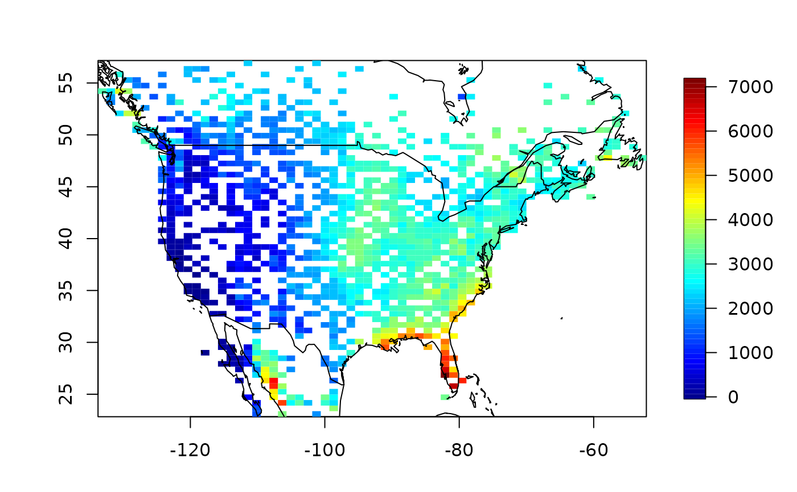
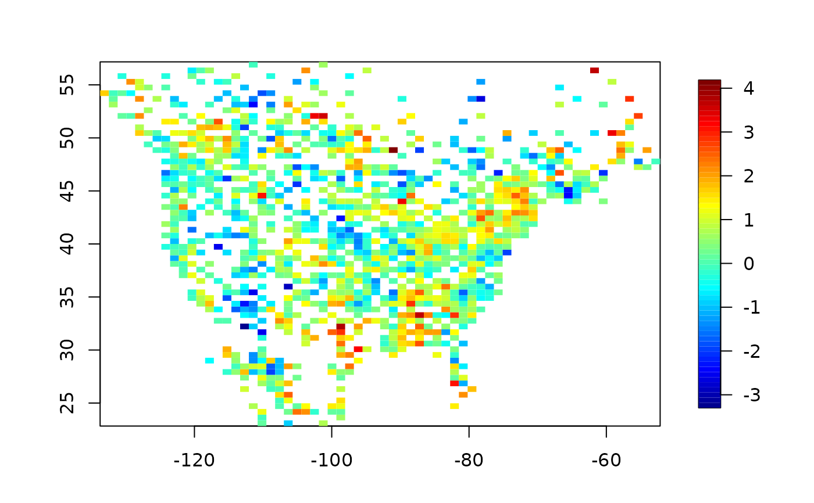

NorthAmericanRainfall.RdAverage rainfall in tenths of millimeters for the months of June, July and August for the period 1950-2010. Data is based on 1720 stations located in North America.
The format is a list with components: "longitude" "latitude" "precip" "elevation" "precipSE" "trend" "trendSE" "type" "x.s" "sProjection" with elevation in meters, longitude as (-180,180), latitude as (-90, 90) and precipitaion in 1/10 mm ( precip/254 converts to inches of rainfall)
precip is the intercept for 1980.5 when a straight line least squares regression is fit to
each station's record. SE is the companion standard error from the least squares fit.
If the station is complete, then precip and precipSE will just be the mean and standard deviation adjusted for a linear trend. The estimated trend trend and and its standard error trendSE are also included.
Also due to the centering, for complete data the intercept and trend estimate will be uncorrelated. The component type indicates whether the station has been "adjusted" (see below) or is still in
"unadjusted" form.
x.s is a useful transformation of locations into stereographic coordinates that reduces the
inflation of North Canada due to the usual lon/lat coordinates. Specifically it is found by:
library(mapproj)
xStereo<- mapproject( NorthAmericanRainfall$lon,NorthAmericanRainfall$lat, projection="stereographic")
NorthAmericanRainfall$x.s<- cbind( xStereo$x, xStereo$y)
NorthAmericanRainfall$projection<- .Last.projectionUse NorthAmericanRainfall$orientation to access the stereographic projection orientation.
The monthly data used to construct this summary was generously provided by Xuebin Zhang, however, the orignal source is freely available as the Global Historical Climate Network Version 2 Precipitation quality controlled, curated and served by the US National Center for Environmental Information. The adjusted data from this archive has been modified from its raw form to make the record more homogenous. Heterogenities can come from a variety of sources such as a moving the station a short distance or changes in instruments. See the National Centers for Envrionmental Information then Access Data and then GHCN.
data(NorthAmericanRainfall)
x<- cbind(NorthAmericanRainfall$longitude, NorthAmericanRainfall$latitude)
y<- NorthAmericanRainfall$precip
quilt.plot( x,y)
world( add=TRUE)

Zstat<- NorthAmericanRainfall$trend / NorthAmericanRainfall$trendSE
quilt.plot( x, Zstat)
